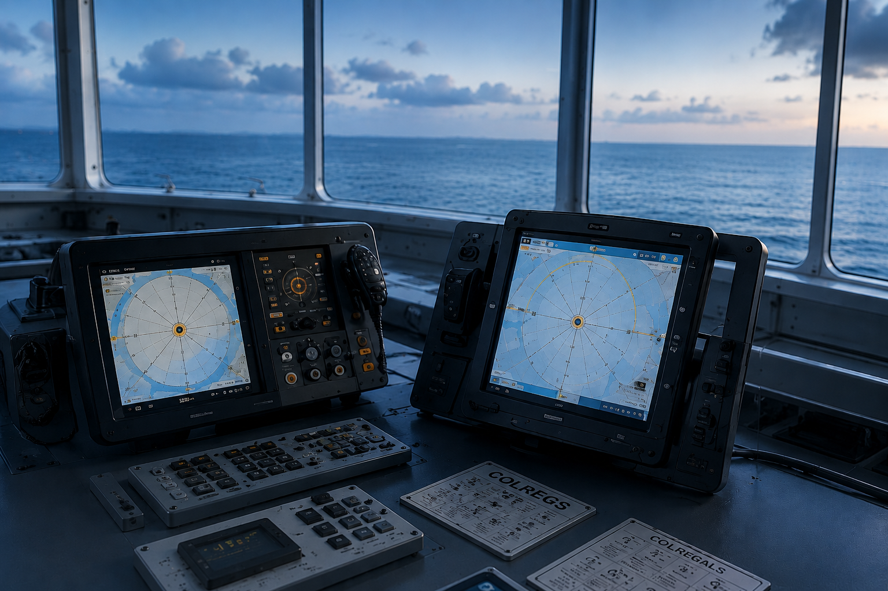
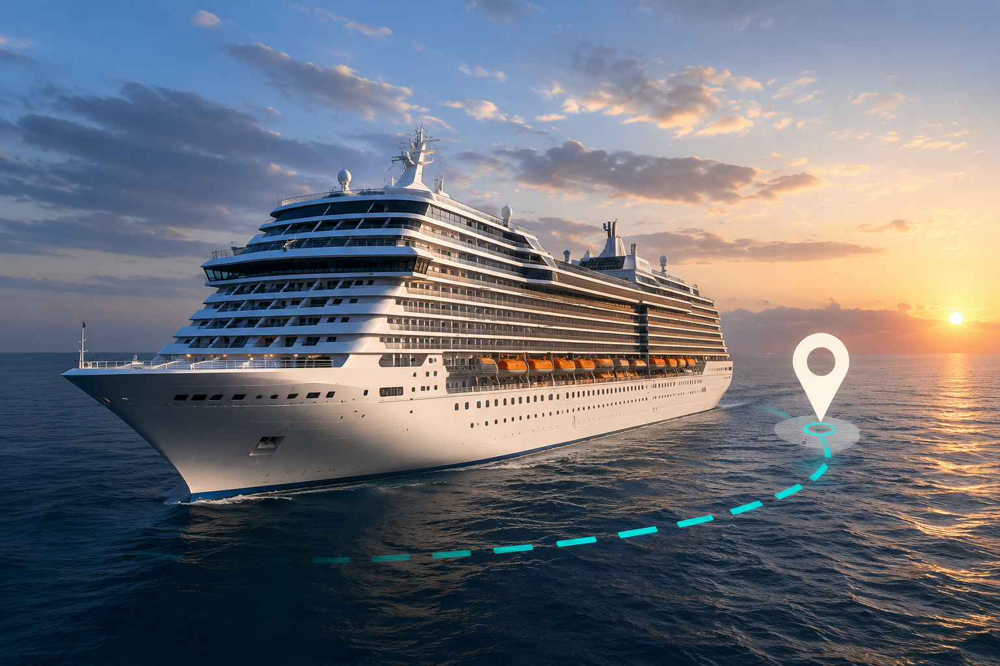
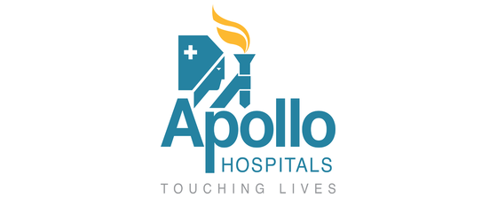
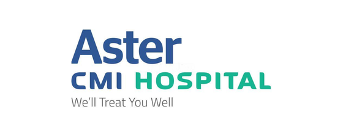
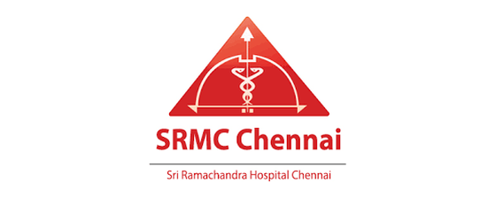
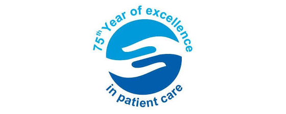
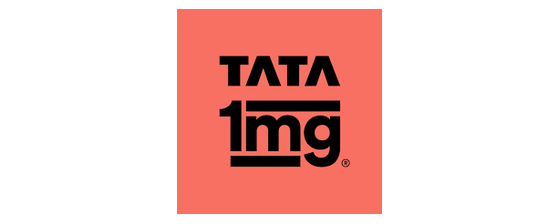
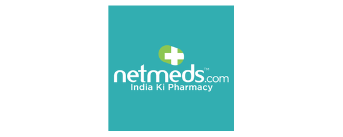
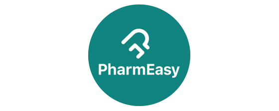

The six questions that start every medical case at sea
Every crew medical case opens the same way: with doubt on the
bridge and no one ashore who owns the answer. These six questions
decide what the case costs - in hours, in money, and in outcome.

01
It is 03:00 and the nearest coast station is out of VHF range. No one on board knows which number reaches a doctor.
3:00 AM. No VHF range.
Who do we call?
02
Chest pain, or indigestion after a long watch? Nobody aboard is qualified to tell the difference - and guessing wrong costs hours that matter.
Chest pain. What is it?
Is it serious?

03
A diversion burns fuel, breaks the charter and costs days. Not diverting could cost a life. That call sits with the master, alone, at sea.
A diversion burns fuel, breaks the charter.
Do we divert?
04
The closest harbour is not always the one with a cardiac unit, a surgeon on duty, or clearance to take a foreign crew member ashore.
Nearest port ≠ best care.
Which port?
05
Once a hospital learns an employer is paying, prices move. We have seen consultation fees at three times the market rate and surgery quoted at nearly four.
Same treatment. 3× the price.
Are we overcharged?
06
If the referral came from a vendor with a financial relationship rather than a clinical one, recovery takes longer and costs more - and nobody ashore finds out until the invoice arrives.
Who chose this hospital?
And why?
About MedShield
One independent medical teamdecides your seafarer's care
Ten years closing a gap the industry lived with: a certified,
independent clinical team sitting above the provider network,
with offices in India, Singapore and the UAE.
01Cost optimisation - IndiaReversing a hospital's 3× pricing once it learned an employer was paying66% total claim reduced
Stage 01
Case reported
An onboard medical case reaches Medshield the moment it happens
- one call, answered at any hour, from anywhere the vessel is.
Stage 02
Medical assessment
A medical professional reviews the case with the crew member
directly - symptoms, history and urgency, assessed before
anything is decided.
Stage 03
Care coordination
Medshield coordinates the right medical support - connecting
ship, provider and hospital so the right care is already arranged.
Stage 04
Treatment & monitoring
Treatment proceeds under continuous oversight, with progress
tracked and the employer kept informed throughout.
Stage 05
Case closed
Care completed. Documentation completed. The case closes with a
full record, nothing left open.
Stage 01
Case reported
An onboard medical case reaches Medshield the moment it happens
- one call, answered at any hour, from anywhere the vessel is.
Stage 02
Medical assessment
A medical professional reviews the case with the crew member
directly - symptoms, history and urgency, assessed before
anything is decided.
Stage 03
Care coordination
Medshield coordinates the right medical support - connecting
ship, provider and hospital so the right care is already arranged.
Stage 04
Treatment & monitoring
Treatment proceeds under continuous oversight, with progress
tracked and the employer kept informed throughout.
Stage 05
Case closed
Care completed. Documentation completed. The case closes with a
full record, nothing left open.
How we can help
Case studies
What happens when a case runs this way. Four findings from two
investigations - every figure taken verbatim from the case files.
01
Cost optimisation - India
Reversing a hospital's 3× pricing once it
learned an employer was paying
66% total claim reduced
Read the case →
The problem
Once the hospital learned an employer's plan was covering the
seafarer, consultation fees were billed at 3× market rate,
pre-habilitation therapy at 2.5×, and surgery quoted at
3.8× - charges applied across every stage of care.
What we found
Charging 1.5× to 10× the market average is an
unregulated practice across Indian and Asian healthcare. The
pre-habilitation therapy was outsourced to a third party inside
the hospital's premises, with the hospital's margin added on top.
What we did
Negotiated rates back to market using our provider network,
referred the seafarer to independent pre-habilitation specialists
outside the hospital's margin, and monitored every line against
the negotiated rate through to settlement.
Result
Surgery reduced from INR 7.75 lakh to INR 2.55 lakh
inclusive of food, supplements and additional services.
Consultation fees down 65%, rehabilitation down 60%, and the total
claim reduced by over 66%.
Surgery re-quoted from INR 7.75 lakh down to INR 2.55 lakh
Negotiated against market rate -
3.8× inflation removed
03
Rehabilitation moved to independent specialists
Provider referral -
60% therapy cost reduction
04
Consultation fees brought back in line with market rates
Cost negotiation -
65% fees reduced
Why MedShield
What changes when you bring MedShield onboard.
Providers chosen by index, not by habit
A multi-parameter score ranks every facility on expertise, success rate, accreditation, response time and pre-negotiated price.
The index is rebuilt from outcomes, not from reputation. Every facility on the panel is re-scored on each closed case, so a centre that slips on response time or success rate falls down the ranking before the next seafarer is sent there.
No vested interest in where you are treated
We own no hospital and no PEME centre. When one vendor both examines and treats, recovery runs longer - we have seen 40% longer.
Independence is structural, not a policy line. Because we earn nothing from the treating facility, the only thing steering the referral is the case itself - which is what keeps a straightforward injury from turning into an extended, billable recovery.
A proprietary selection engine, not a directory
Our own scoring model reads the case and returns the facility that fits it, on a platform staffed 24/7/365.
A directory lists who exists; the engine reads the diagnosis, the port, the vessel's schedule and the crew member's insurer, then returns the facility that fits all four. The desk behind it is staffed around the clock, so the answer comes back in minutes at any hour, in any time zone.
Eighty per cent of the panel are doctors
130+ subject-matter experts across nine disciplines, founded and run by clinicians.
Cases are read by clinicians in the relevant discipline - orthopaedics, cardiology, psychiatry and six more - rather than by coordinators passing files along. The company was founded by practising doctors, and the clinical majority on the panel is deliberate.
The most accredited organisation in Asia
ISO 45001, held by no other Indian company in maritime health and safety. Plus ISO 9001 and Chamber of Commerce affiliations.
ISO 45001 is the occupational health and safety standard, and no other Indian company in maritime health and safety holds it. Alongside ISO 9001 for quality management and our Chamber of Commerce affiliations, it means our processes are audited by outside bodies, not self-declared.
Lower medical spend
Treatment costed and approved against pre-negotiated rates before delivery.
Rates are agreed with each facility before a case ever arrives, and every line of treatment is costed and approved against them in advance. Owners see the bill before it is incurred rather than disputing it afterwards - which is where most of the overspend in crew healthcare has always hidden.
Fewer disputed claims
The file is complete from hour one, not reconstructed at settlement.
Reports, imaging, invoices and fitness certificates are gathered as the case runs, in the format P&I clubs and insurers ask for. Nothing has to be chased months later from a hospital that has moved on, so claims settle on the record instead of on argument.
Faster return to work
Treatment monitored and fitness-to-work coordinated, closing the gap to sign-on.
We stay with the case after discharge: treatment is monitored, follow-ups are booked, and the fitness-to-work examination is coordinated the moment the seafarer is ready for it. The days normally lost between recovery and sign-on simply do not accumulate.
Lower operational cost
One case team replaces overseas coordinators kept on standby for crew healthcare.
One case team covers every port, so there is no network of overseas coordinators to retain, brief and pay for standby time. The fixed cost of being ready everywhere becomes a variable cost paid only on the cases that actually occur.
Bring MedShield onboard.
What we are not.
Not a hospital, a clinic, a pharmacy or an insurer. Not a cruise
booking company, a medical tourism agency or a crew recruiter.
We are the independent case owner from incident to outcome.
Medically qualified founders who run the case desk themselves.
Get to know the people who handle your case.
Dr. Desikan Setlur
Founder and CEO
Dr. Princi Singh
Co-founder and COO
The SME panel
Who reads your case
Experts on call
130+
Specialist teams
9
Cover
24/7
80% medical specialists20% cross-functional
Medical teams 7
Maritime medical specialistsChronic conditions, injury and mental health at sea
TelemedicineRemote consultation wherever the vessel is
Healthcare and claimsMedical, disability and life claims, handled together
Clinical findings correlationFindings, diagnosis and claim read against each other
Treatment plan analysisProposed plans reviewed on clinical merit and cost
Global pharmacologyDrug protocols and supply held to international standards
Occupational preventive healthProgrammes that cut workplace risk before a case starts
Non-medical teams 2
Medico-legal and arbitrationDisputes resolved against international maritime standards
Technology, 24/7Secure infrastructure, data confidentiality, uptime
Presence & network
On the ground where your crew lands.
A case moves only as fast as the nearest accredited bed.
We hold direct points of presence in the port and recruitment cities
crew actually move through - so admission, rates and reporting are
settled locally, not negotiated from a desk several time zones away.
17+
Cities with direct point-of-presence
45+
Locations across India
1,800+
Hospitals, clinics, labs & pharmacies
10
PEME centres planned
Offices
India ·
Singapore ·
UAE
ChennaiHQ
Mumbai
New Delhi
Kochi
Visakhapatnam
Kolkata
Kandla
Thoothukudi
Goa
Mangaluru
Hyderabad
Bengaluru
Pune
Ahmedabad
Bhubaneswar
Coimbatore
Why here
On the ground
Indicative map. Pins show principal port and recruitment cities;
the full network runs to 45+ locations.
Our network
Trusted by leading hospitals and pharmacies across India
Your crew is treated inside accredited networks we already hold
relationships with - so admission, rates and reporting are settled
before the case starts.

Apollo Hospitals
Fortis Healthcare
Max Healthcare
Medanta
Manipal Hospitals

Aster CMI Hospital
Kauvery Hospital
P. D. Hinduja Hospital
Apollo Hospitals
Fortis Healthcare
Max Healthcare
Medanta
Manipal Hospitals
Aster CMI Hospital
Kauvery Hospital
P. D. Hinduja Hospital

Sri Ramachandra, Chennai
Sunshine Hospitals

75 Years in Patient Care

TATA 1mg

Netmeds
MedPlus

PharmEasy
Sri Ramachandra, Chennai
Sunshine Hospitals
75 Years in Patient Care
TATA 1mg
Netmeds
MedPlus
PharmEasy
A sample of the 1,800+ hospitals, clinics, laboratories and pharmacies
in the MedShield network.
Let's transform your case management.
If this is how you want your crew cases handled - send us your
fleet profile and we'll come back with a proposal.